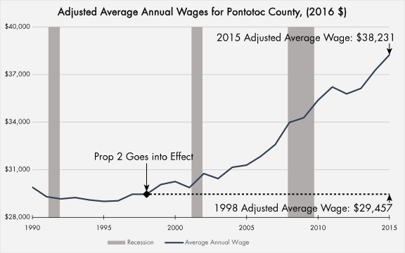
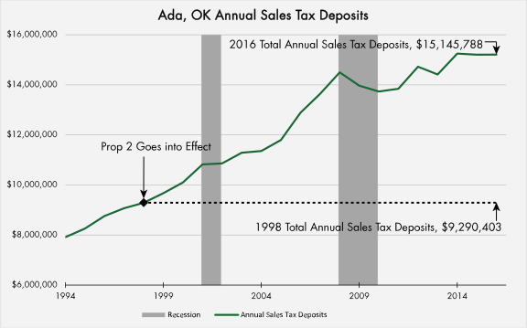

Ada's economy has fared well since Proposition 2 went into effect in 1998. This section compares economic data before and after Proposition 2 went into effect. Over a period of 18 years, employment is up 35%, the average wage for the county has nearly doubled and more than outpaced inflation. Sales tax deposits have increased by 64% which provides additional evidence that people in Ada are spending more with increased incomes. This data also shows that Ada has done well in weathering two national recessions as well as the current drop in oil prices which have affected the region. Compared to conditions before Proposition 2, Ada's economy has measured well since 1998 and has shown strong signs of growth.
The number of people who are employed in Ada has increased significantly since Proposition 2 first went into effect in 1998. Using data from the Bureau of Labor Statistics, the number of people employed in Ada grew 35% from 1998 to 2016. This is an increase of 4,590 people, or an average of 255 new jobs a year since Proposition 2 has gone into effect. This increase is significant compared to the decade before Proposition 2’s effect, and approximately 88% of manufacturing industry workers in the Ada area work for a company impacted by Proposition 2 funds.
Source: Bureau of Labor Statistics, U.S. Department of Labor, Local Area Unemployment Statistics for the Ada, OK Micropolitan Area
Wages have followed a similar pattern. Using inflation adjusted data from the Bureau of Labor Statistics Quarterly Census on Employment and Wages (QCEW) from 1990, the adjusted average annual wage for Pontotoc County has grown by 30 percent from 1998 to 2016. When adjusted for inflation, the value of the average wage in Pontotoc County from 1990 to 1998 appear to have been stagnant. Since Proposition 2 has gone into effect, the average wage has grown significantly.

Source: Bureau of Labor Statistics, U.S. Department of Labor, Quarterly Census of Employment and Wages for Pontotoc County. All dollar values are adjusted to 2016 values using Consumer Price Index (CPI) figures.
While wages and employment have increased, there is also evidence for an increasing level of retail sales activity for Ada. According to data from the Oklahoma Tax Commission, total annual sales tax deposits for Ada have increased by $5,917,339 from 1998 to 2016. This represents an increase of 64% for sales tax deposits, and equates to an additional $150 million in retail sales in Ada.

Source: Oklahoma Tax Commission, Sales Tax Collections by NAICS for Ada, Oklahoma
Proposition 2 is just one part of Ada's economic success. Ada's economy received a major "boost" around 2005. This may be caused, in part, by the growing success of the Chickasaw Nation. Legal Shield and East Central University were also expanding during this period as well. While there is no way to prove what would have happened without Propoistion 2, this data shows Ada have have had nearly two decades of sustained economic success, and efforts funded by Proposition 2, such as retailing Legal Shield and Flex-N-Gate, appear to have played a role in this success.
Proposition 2 has been used in innovative ways, particularly for a community the size of Ada. While many communities use funds to attract new companies, Proposition 2 dollars have been used to help retain major employers, repurpose empty manufacturing buildings, and invest in local educational facilities. The funds have also gone to help a diverse array of companies, industries and projects. These unique aspects to Proposition 2 may have helped Ada better weather state and national recessions. As economic development efforts move forward in Ada, innovation and diversity appear to be key to future success.